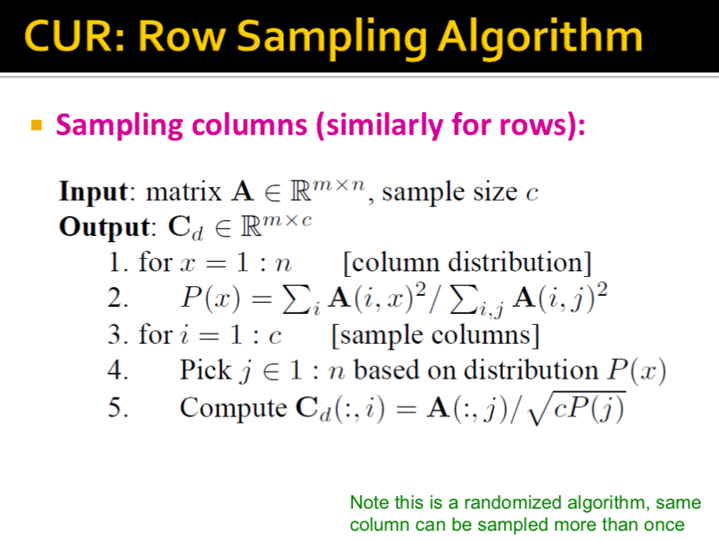
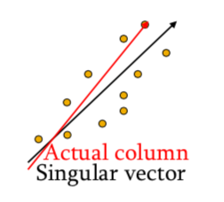
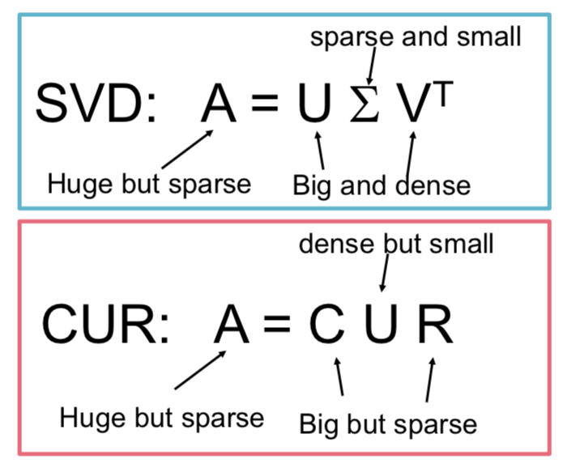
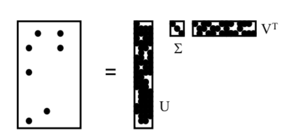
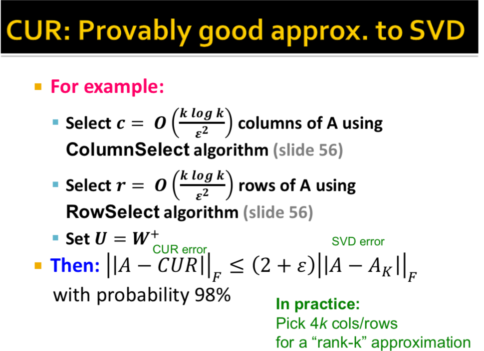
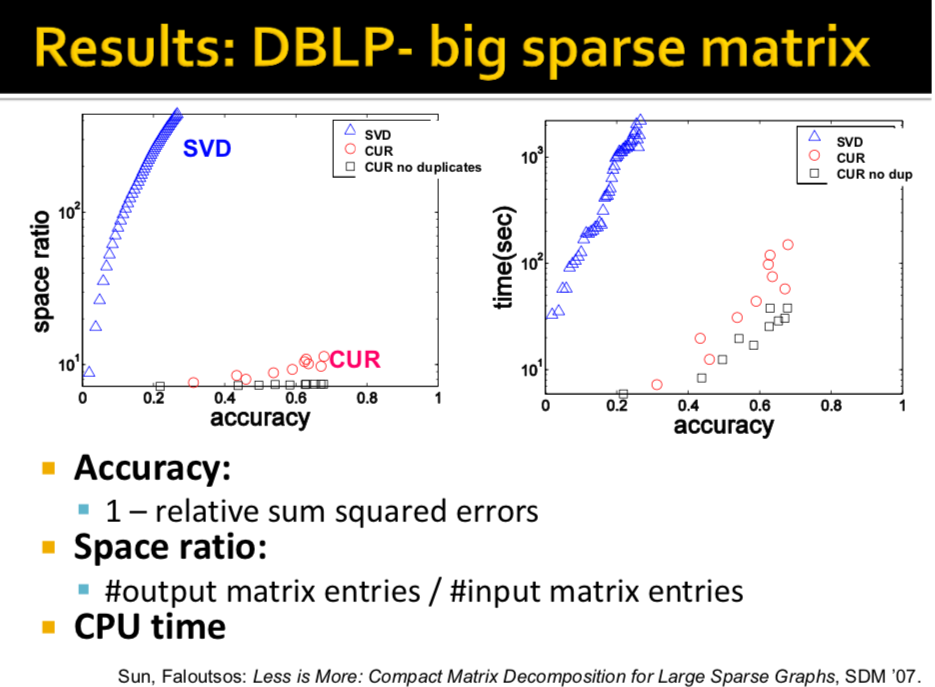

Lecture 5- Dimensionality Reduction
THe first latent dimension is the direction in which the points have the highest variance. THe second is the dimension orthogonal to the first, in which the points show the 2nd greatest variance.
Linear Algebra
The Rank of a matrix measures dimensionality.
Gram Matrix
For a matrix X, XTX (the Gram matrix, also known as the covariance matrix) is a square matrix whose diagonal elements are the sums of squares of of elements in x, and is positive semi-definite. It essentially captures the covariance between matrix columns.
- If the vectors are centered random variables, the Gramian is proportional to the covariance matrix, with the scaling determined by the number of elements in the vector.
- Since the Gram matrix over the reals is a symmetric matrix, it is diagonalizable and its eigenvalues are non-negative. The diagonalization of the Gram matrix is the singular value decomposition.
PCA
For a data matrix M, PCA is normally computed by computing the matrix of eigenvectors W of MTM (the Gram Matrix). The full principal components decomposition of M is then T=MW (you can drop some columns if you don't want the whole decomposition). The eigenvectors form a basis for M in order of importance, so we can drop the last few dimensions if we want to compress.
PCA involves converting a set of observations into a set of values of linearly uncorrelated principal components. The transformation is defined in such a way that the principal components are ordered in terms of variance, and all principal components are orthogonal to each other.
For a data matrix M, PCA is normally computed by computing the matrx of eigenvectors W of MTM (the Gram matrix or correlation matrix). The full principal components decomposition of M is then T=MW (you can drop some columns if you don't want the whole decomposition). The matrix W of eigenvectors of the correlation matrix MTM can be thought of as a rigid rotation in high dimensional space. When you apply this transformation to the original data, the axis corresponding to the principal eigenvector is the one along which the points are most spread out.
SVD:
- SVD is essentially another way to do PCA
- Goal is to compress/reduce dimensionality
- We can often take data and represent by an M by N matrix
- SVD is a unique decomposition which also optimally minimizes the reconstruction error of the decomposition, defined by the Frobenius Norm = Euclidean distance between two matrices.
- ||A−B||F=∑ij(Aij−Bij)2‾‾‾‾‾‾‾‾‾‾‾‾‾‾√
How to pick singular values r
- Pick r so the retained singular values have at least 90% of the total energy, which is defined as the sum of their squares.
U is the left singular vectors
Σ is the right singular vectors
V is the right singular vectors
Properties:
It is always possible to decompose a real matrix A into A=UΣVT where
- U, Σ, V are unique given A
- U, V are column orthonormal (UTU=I,VTV=I and U, V are normal)
- Σ is diagonal
SVD Decomposes into:
- U: user-to-concept matrix
- V: movie-to-concept matrix
- Σ: its diagonal elements: ‘strength’ of each concept
If you multiply the AVD decomposition for particular axes, that is the projection of the data onto that axis.
Computing SVD
First we need a method for finding th principal eigenvalue and eigenvector of a symmetric matrix.
Method (Power Iteration - We never use this in practice as there are much more advanced methods, but this is a good basic method):
- Start with any 'guess eigenvector' x0
- Construct xk+1=Mxk||MXk||F for k=0,1,... and stop when converge
- Once you have the princple eigenvector x, get its eigenvalue λ by λ=xTMx.
- Find more eigenvalues and vectors by continuing on
M∗=M−λxxT
where M∗ is the matrix after removing the factor of x.
This algorithm is very distributable. You only need a couple of iterations.
Suppose A=UΣVT
AT=VΣUT
ATA=VΣ2VT since
UTU is an identity matrix by orthonormality.
(ATA)V=VΣ2.
Thus, we can find V and Σ by finding the eigenpairs for ATA.
We can find U and Σ by finding the eigenpairs for AAT.
Time Complexity when computing the full SVD using specialized methods: O(nm2) or O(n2m) whichever is less. But less work if we just wnat singular values, or if we want the first k singular vectors, or if the matrix is sparse.
Using SVD
Q: Find users that like movie 'Matrix' but havent watched it.
A: Map query into the 'concept space' for Matrix.
- That is, project each user matrix d into the dimension defined by 'Matrix' by dot product
- dconcept=dV
Advantages of SVD: Optimal low-rank approximation (in Frobenius norm)
Drawbacks of SVD:
- Interprability problem
- Lack of Sparsity (Singular vectors are DENSE, even if original matrices are sparse!) (1)
CUR Decomposition
CUR is a provably good approximation to SVD (3). It performs much better than SVD space and time-wise on sparse data (4). The tradeoff is introducing some small error.
Motivation: It is common for the matrix A we wish to decompose to be very sparse. But U and V from an SVD decomposition will not be sparse. CUR decomposition solves this problem by using only (randomly chosen) rows and columns of A.
Goal: Express A as a product of matrices C, U, R.
Make ||A−C⋅U⋅R||F small
Matrix U is not diagonal, it is the dense pseudo-inverse of the intersection of C and R.
Constraints on C and R:
Let W be the 'intersection of sampled columns C and rows R.
Def: W+ is the pseudoinverse
Let SVD of W=XZYT
Then: W+=YZ+XT
where Z+ is the reciprocals of non-zero singular values Z^+{ii} = 1/Z{ii}. The pseudinvest is as lcose to the real inverse as you can get (2)
How to sample the rows and columns? We must decrease the exected error between A and its decomposition, so we much pick rows and columns in a non-uniform nammer. We pick rows and coluymns wiht probability proportional to the square of its Frobenium norm (its 'importance')
CUR Ago:

What CUR Computes: 
Rough intuition: CUR is more likely to pick poiunts away from the origin. Assuming smooth data with no outliers these are the directions of maximum variation.
CUR Pros:
- Easy interoperation
- Since the basis vectors are actual columns and rows
- Sparse Basis
- Since the basis vectors are actual columns and rows
CUR Cons
- Duplicate rows and cols - columns fo large norms will be sampled many times.
Summary

(1)

(2) Note about the pseudoinverse:
- W=XZYT then due to normality W−1=(YT)−1Z−1X−1=YZ−1XT. Since Z is diagonal, Z−1=1Zii. Thus if W is invertible, pseudoinverse is the true inverse. If W is non-invertible, the pseudoinvese is as close to the real inverse as you can get.
(3) CUR is a O(k log k) approximation to SVD, where k is the rank of A

(4)CUR Much more space and time efficient than SVD for very sparse matrices.
